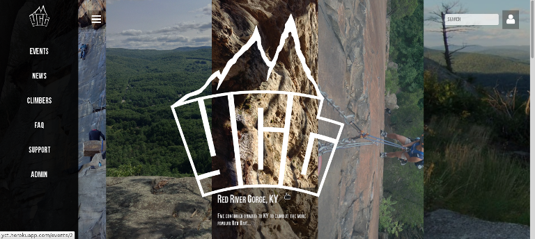
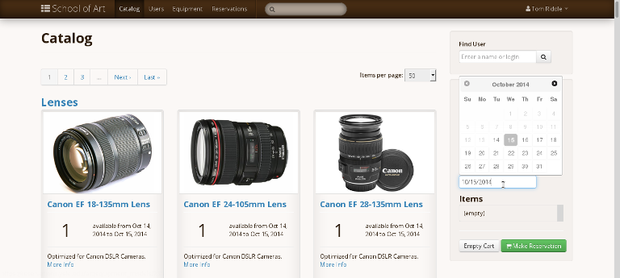
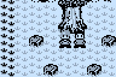
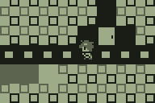
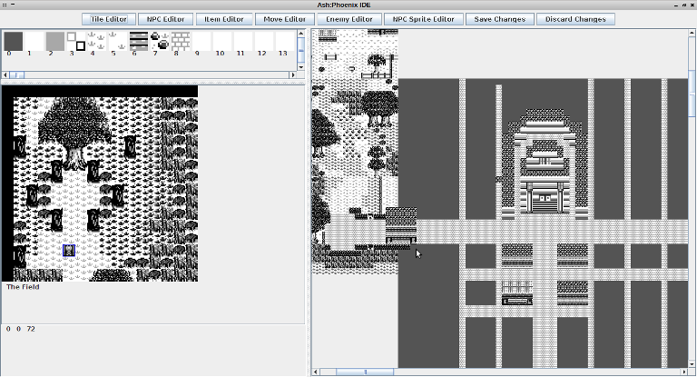
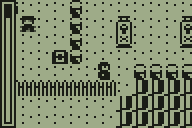
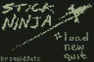
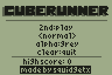

a webapp made for YCT but easily adaptable to any organization. Almost all the frontend was custom built from scratch except for a single JS library used to truncate text. The webapp uses Ruby on Rails to manage user accounts, who can make posts on a blog-like structure, create events and manage signups, post pictures of said events, and provide information for prospective members.
The application is protected with CAS authentication although most of it is viewable without the need to log on. The post engine features full kramdown-flavored Markdown support.
You can check out the github repository here

Reservations is a large, open source media equipment management application built on Ruby on Rails. It's about three or four years old; I spent summer of 2013-2014 working on this project. The application is in use by several departments on campus, with some instances handling over 5,000 users. The application is also beginning to be used by other universities and libraries across the country.
Over that summer I became the #1 contributer by number of commits to the project and helped lead many charges to drastically improve the application. I rewrote the loan validation system which had been completely broken previously, severely optimized the loading time of the application by cutting out several N+1 query issues, and successfully upgraded the application to Rails 4.


Ah, my first love, the graphing calculator. Ash:Phoenix was my most ambitious project by far, and I'm sad to report that it is yet to be finished. However, it is really representative of my highest achievement with the calculator to date...
Ash:Phoenix is a fully immersive role playing game (like Final Fantasy or Pokemon) for the TI-83+/84+ line of graphing calculators. The engine uses 4 level grayscale and renders 12x12 tiles on the overworld map. The overworld itself was split into a grid of 64x64 tile chunks, each with 255 different tiles available. The overworld also supported incremental loading, which meant that you would be able to transition between the 64x64 chunks seamlessly, making in effect the whole overworld absolutely gigantic. This was facilitated by the use of some custom assembly scripts to make the scrolling actions as fast as possible. But the map data was kept at a manageable level thanks to a basic RLE compression scheme. Special warp tiles provided a way to quickly move around the map, or created the illusion of going inside buildings and forests.
The NPC scripting interpreter was almost a language all on its own, able to set bits in the player save file to indicate quests completed, flags set, etc. NPCs could give the player items, send them into fixed battles, and more.
The battle engine was relatively sophisticated, with six different combat 'types', similar to Pokemon. The battle system actually resembled Pokemon quite a lot, mostly because I got really into playing competitive Pokemon around this time. Items boosted certain player stats, and players could learn different skills or moves that were possibly complemented by their player type. Moreover, as the game progressed, other characters of different types and dispositions could join the player's party and be available for use in battle.

To aid in generating the massive amount of content that would go into this game, I created a content management tool using Java to draw the tiles, make the maps, items, and NPC scripts. The application generated text files that could be assembled using a z80 assembler into binary data and transmitted to the calculator.
Other Calculator Projects (Highlights)
This is a selection of some of my other calculator projects. For a more complete listing you can check out my ticalc.org profile

Embers was a prequel to the Ash:Phoenix series, focusing on a shorter storyline and an action RPG feel. A really hacky AI was developed in order to get enemies to navigate obstacles to get to the player.

Stick Ninja is a fun little platformer featuring some sort-of sophisticated physics (momentum!).

Cuberunner is a port of the iphone game of the same name. Probably because of this it's my most popular game by far, with around 18,000 downloads on ticalc.org